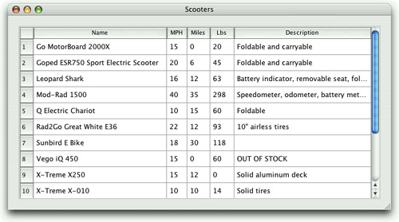

|
|
In the preceding section, we saw how to interact with a database using QSqlQuery and QSqlTableModel. In this section, we will see how to present a QSqlTableModel in a QTableView widget.
The Scooters application, shown in Figure 13.1, presents a table of scooter models. The example is based on a single table, scooter, defined as follows:
CREATE TABLE scooter (
id INTEGER PRIMARY KEY AUTOINCREMENT,
name VARCHAR(40) NOT NULL,
maxspeed INTEGER NOT NULL,
maxrange INTEGER NOT NULL,
weight INTEGER NOT NULL,
description VARCHAR(80) NOT NULL);

The id field's values are generated automatically by the database, in this case by SQLite. Other databases may use a different syntax for this.
For ease of maintenance, we use an enum to give meaningful names to the column indexes:
enum {
Scooter_Id = 0,
Scooter_Name = 1,
Scooter_MaxSpeed = 2,
Scooter_MaxRange = 3,
Scooter_Weight = 4,
Scooter_Description = 5
};
Here is all the code that is necessary to set up a QSqlTableModel to display the scooter table:
model = new QSqlTableModel(this);
model->setTable("scooter");
model->setSort(Scooter_Name, Qt::AscendingOrder);
model->setHeaderData(Scooter_Name, Qt::Horizontal, tr("Name"));
model->setHeaderData(Scooter_MaxSpeed, Qt::Horizontal, tr("MPH"));
model->setHeaderData(Scooter_MaxRange, Qt::Horizontal, tr("Miles"));
model->setHeaderData(Scooter_Weight, Qt::Horizontal, tr("Lbs"));
model->setHeaderData(Scooter_Description, Qt::Horizontal,
tr("Description"));
model->select();
Creating the model is similar to what we saw in the preceding section. One difference is that we have provided our own column titles. If we had not done so, the raw field names would have been used. We have also specified a sorting order using setSort(); behind the scenes, this is implemented by an ORDER BY clause.
Now that we have created the model and populated it with data using select(), we can create a view to present it:
view = new QTableView;
view->setModel(model);
view->setSelectionMode(QAbstractItemView::SingleSelection);
view->setSelectionBehavior(QAbstractItemView::SelectRows);
view->setColumnHidden(Scooter_Id, true);
view->resizeColumnsToContents();
view->setEditTriggers(QAbstractItemView::NoEditTriggers);
QHeaderView *header = view->horizontalHeader();
header->setStretchLastSection(true);
In Chapter 10, we saw how to use QTableView to present data from a QAbstractItemModel in a table. Since QSqlTableModel is (indirectly) derived from QAbstractItemModel, it can readily be used as the data source of a QTableView. The setModel() call is all that is necessary to connect the view to the model. The rest of the code only customizes the table to make it more user-friendly.
The selection mode specifies what, if anything, the user can select; here we have made individual cells (fields) selectable. This selection is usually shown by a dotted outline around the selected cell. The selection behavior specifies how selections should work visually, in this case by entire rows. This selection is usually shown by using a different background color. We have chosen to hide the ID column because the IDs are not meaningful to the user. We have also set NoEditTriggers to make the table view read-only.
An alternative for presenting read-only tables is to use QSqlTableModel's base class, QSqlQueryModel. This class provides the setQuery() function, so it is possible to set complex SQL queries to provide particular views of one or more tables—for example, using joins.
Unlike the Scooters database, most databases have lots of tables and foreign key relationships. Qt provides QSqlRelationalTableModel, a subclass of QSqlTableModel that can be used to display and edit tables with foreign keys. A QSqlRelationalTableModel is very similar to a QSqlTableModel, except that we can add QSqlRelations to the model, one for each foreign key. In many cases, a foreign key has an ID field and a name field; by using a QSqlRelationalTableModel, we can ensure that users can see and change the name field while behind the scenes the corresponding ID field is the one that is actually used. For this to work correctly, we must set a QSqlRelationalDelegate (or a custom subclass of our own) on the view that is being used to present the model.
We will show how to enable the presentation and changing of foreign keys in the next two sections, and we will give more coverage of QTableViews in the last section of this chapter.
|
|
| Converted from CHM to HTML with chm2web Pro 2.85 (unicode) |